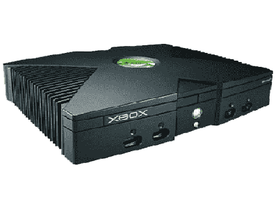
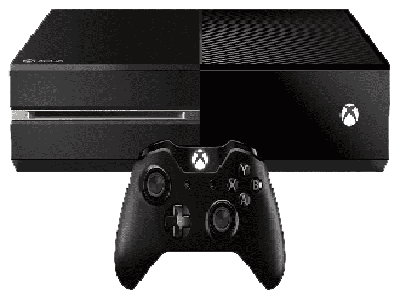
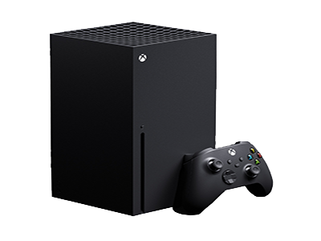

Xbox
Xbox es una videoconsola doméstica de 32 bits y la primera de la serie de videoconsolas Xbox fabricada por Microsoft. Salió a la venta como la primera incursión de Microsoft en el mercado de las consolas de videojuegos el 15 de noviembre de 2001 en Norteamérica, seguida de Australia, Europa y Japón en 2002. Está clasificada como consola de sexta generación, compitiendo con la PlayStation 2 de Sony, la GameCube de Nintendo y la Sega Dreamcast de Sega. También fue la primera consola exitosa producida por una empresa estadounidense desde el lanzamiento de la Atari 2600 a finales de los años 70.
Xbox 360
Xbox 360 es la segunda videoconsola de sobremesa de la marca Xbox producida por Microsoft. Fue desarrollada en colaboración con IBM y ATI (AMD) y lanzada en América del Sur, América del Norte, Japón, Europa y Australia entre 2005 y 2006. Su servicio Xbox Live (el cual es de pago y sigue activo) permite a los jugadores competir en línea y descargar contenidos como juegos arcade, demos, tráileres, programas de televisión y películas. La Xbox 360 es la sucesora directa de la Xbox, y compitió con la PlayStation 3 de Sony y Wii de Nintendo como parte de las videoconsolas de séptima generación.

Xbox one
Xbox One es una consola de videojuegos producida por Microsoft. Fue presentada el 21 de mayo de 2013.Es la sucesora de la Xbox 360 y la tercera consola de la marca Xbox. Forma parte de las videoconsolas de octava generación. Compitió con PlayStation 4 de Sony y Wii U de Nintendo y más tarde la Switch. Su salida a la venta fue el 22 de noviembre de 2013 a un precio de 499 dólares.
Xbox one X
Xbox One X es una versión mejorada de la consola Xbox One de Microsoft. Fue diseñada para mejorar el procesamiento gráfico de sus videojuegos, adaptándose a los nuevos monitores de alta definición 4K, y para superar a sus competidoras en cuanto a la potencia gráfica. Fue promocionada por sus creadores como "la consola más potente del mundo". La Xbox One X es totalmente compatible con los juegos y accesorios de Xbox One. La gran mayoría de los juegos de Xbox recibirán una actualización para correr con gráficos mejorados en la Xbox One X.

Xbox series X
Las Xbox Series X y Xbox Series S (colectivamente, Xbox Series X|S), son una línea de videoconsolas de sobremesa desarrolladas por Microsoft y la cuarta generación de la familia de consolas Xbox. La familia de consolas, conocida colectivamente como "Project Scarlett" y revelada por primera vez en el E3 2019, incluye la Xbox Series X de gama alta, revelada en The Game Awards 2019 y cuyo nombre en código es "Project Anaconda", y la Xbox Series S de menor costo, anunciada en septiembre de 2020 y cuyo nombre en código es "Project Lockhart". Ambas consolas se lanzaron el 10 de noviembre de 2020 y compiten actualmente con la PlayStation 5 de Sony, lanzada el mismo mes, y ambas son parte de la novena generación de consolas de videojuegos.
